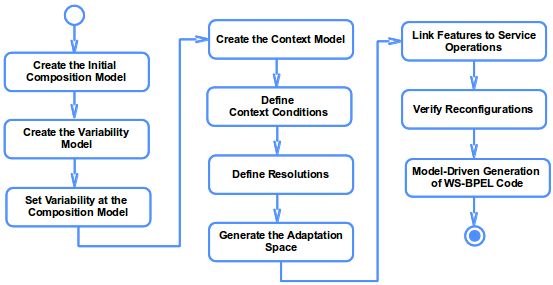

| Method Content to Design the Dynamic Adaptation of Web Service Compositions |
Relationships
| Contents |
|---|
Main Description
| This website describes the elements in the method content to support the creation of the process model to design dynamic
adaptations of Web service compositions in the closed world with our MDE-SPLE approach (see the figure below). This website
is organized by tasks that support the creation of the work products to guide dynamic adjustments. Each task has a
one-to-one mapping to each activity in the process model. Therefore, the information in each task supports the creation of
each activity in the process model.  |